Contents
Linjäriserade modeller
GN=0.84*tf([9.4 1],[2 1])*tf([0.00475 1],[.2 1]);
GF=tf([2 1],[9.4 1])*tf(1,[1 1]);
GHP=tf(1,[0.4 1])*tf(1,[.3 1]);
GLP=tf(1,[2.45 1])*tf(1,[.2 1]);
Ramp som insignal
t=0:0.1:60;t=t(:);
hcramp=1.5/100*t;
hcramp(201:end)=hcramp(201);
plot(t,hcramp)
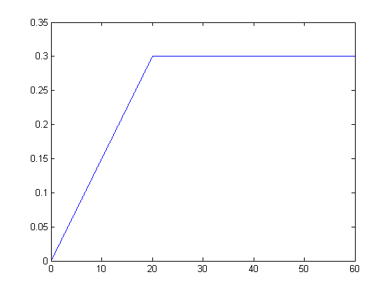
Neutronflöde
Qf=lsim(GN,hcramp,t);
hold on
plot(t,Qf,'r')
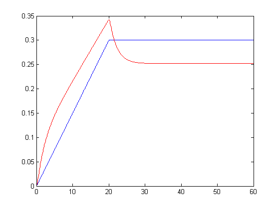
Ångflöde
Mst=lsim(GF,Qf,t);
plot(t,Mst,'k')
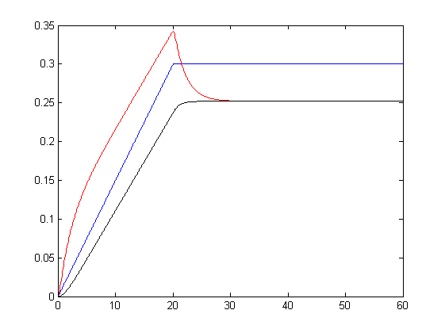
PHP=lsim(GHP,Mst,t);
PLP=lsim(GLP,PHP,t);
Pel=0.4*PHP+0.6*PLP;
plot(t,Pel,'g')
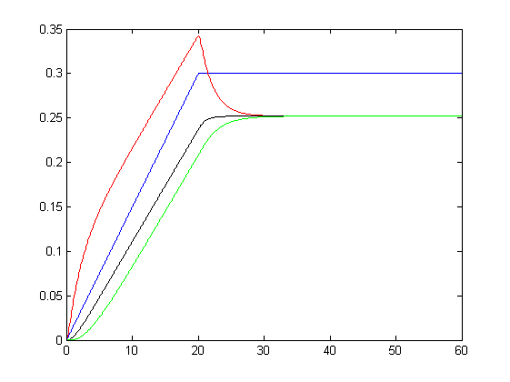
legend('HC-flöde','Fissionseffekt','Ångflöde','Eleffekt','location','SE')
title('Ramp på hc-flöde')
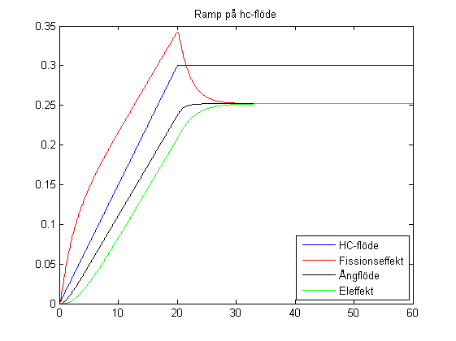
Ramp i driftområdet
f2dd
plot(hcramp*10400+6000,Qf*100+80,'r','linew',2)
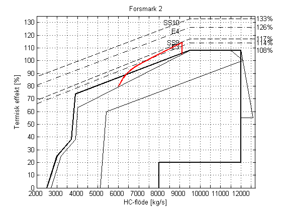
Steg som insignal
t=0:0.01:20;t=t(:);
hcsteg=0*t;
hcsteg(101:end)=0.1;
hcsteg=lsim(tf(1,[1 1]),hcsteg,t);
figure
plot(t,hcsteg)
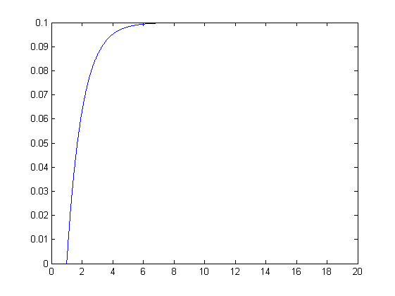
Neutronflöde
Qf=lsim(GN,hcsteg,t);
hold on
plot(t,Qf,'r')
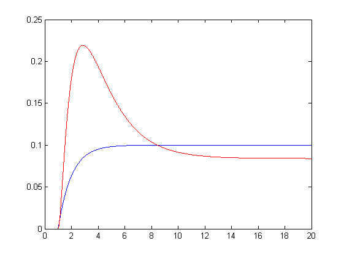
Ångflöde
Mst=lsim(GF,Qf,t);
plot(t,Mst,'k')
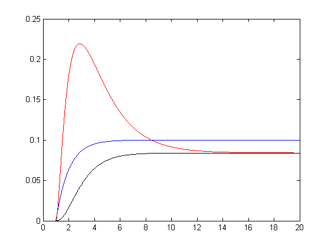
PHP=lsim(GHP,Mst,t);
PLP=lsim(GLP,PHP,t);
Pel=0.4*PHP+0.6*PLP;
plot(t,Pel,'g')
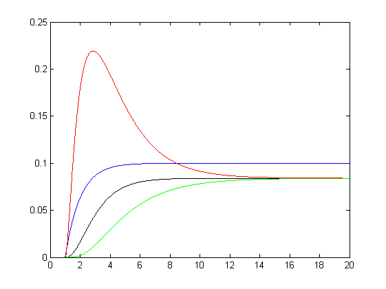
legend('HC-flöde','Fissionseffekt','Ångflöde','Eleffekt','location','NE')
title('Steg i hc-flöde')
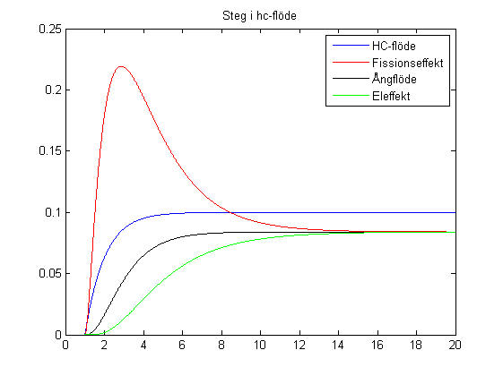
Steg i driftområdet
f2dd
plot(hcsteg*10400+6000,Qf*100+80,'r','linew',2)
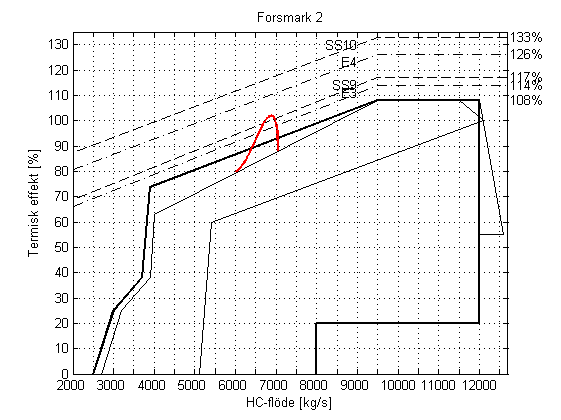